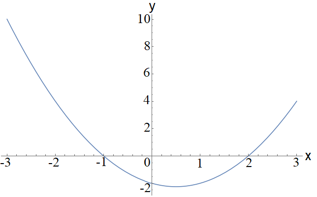
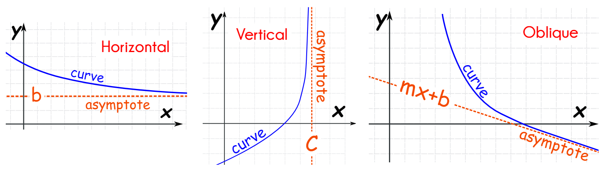
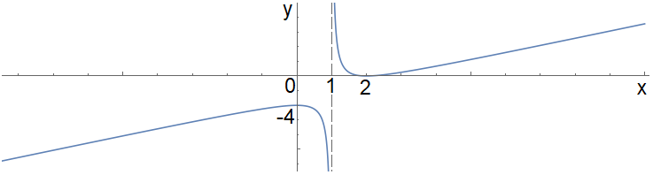

Algebra#
Quadratic Equations#
A Quadratic equation is one where the highest power of \(x\) is two:
where \(a, b, c\) are all constants. Quadratic equations appear frequently in mathematics and the sciences, so it is important to confidently solve them. Since the highest power in the equation is two, there are (up to) two real solutions to this equation.
Brackets and FOIL#
To think about how to solve quadratics, let’s first consider how to expand brackets, starting with a simple problem:
We can use an ordered method, known as FOIL—First, Outside, Inside, Last—to expand the two brackets:
If presented with a quadratic, we can revise this process, factorizing it into a set of brackets to solve the equation. For example, solve the quadratic:
We need two numbers that add to 3 and multiply to 2. A good choice is \(1\) and \(2\):
Once the terms are in brackets, since the right-hand side equals zero, one of the two brackets must also equal zero:
which rearranged means the solutions to the quadratic are:
The equation we factorize must equal zero. To see why, suppose we had:
We might be tempted to say here that \((x+1) = 1\) and \((x+2) = 2\), but we could also say it should be \((x+1) = \sqrt{2}\) and \((x+2) = \sqrt{2}\), etc. It turns out there are an infinite number of solutions here, which clearly is not true! The beauty of having zero on the right-hand side is that one of the brackets must equal zero.
Completing the Square#
The goal of this method is to bring the equation close to the form of a perfect square:
This is known as Completing the Square. To see how this is useful, let’s start with the quadratic form:
First, factor out the coefficient \(a\):
Next, to bring this into the form of a perfect square, we add and subtract the term \(\frac{b^2}{4a^2}\), which is just the coefficient of the \(x\) term squared and divided by 4:
Now we see that we have a perfect square in the first three terms, which we can factorize:
Rearrange to make \(x\) the subject of the formula:
Hence, we derive the quadratic formula!
An example: complete the square on \(f(x) = x^2 + 6x + 5 = 0\):
Hence, we see that \((x+3)^2 = 4 \Rightarrow x = -3 \pm 2 = (-5, -1)\). To check:
Roots#
Take a polynomial function:
Since \(f(a) = f(b) = 0\), we call \(a\) and \(b\) the Roots of the function. If we were to plot the \(f(x)\), then \(x=a, b\) would be where the graph cuts the \(x\)-axis.
An example:

Notice the roots at \(x=-1, 2\).
Remainders#
Suppose we have a polynomial \(f(x)=(x-a)(x-b)\) and wanted to see if a function \(g(x)=(x-c)\) was a factor. We could perform long division, however, if \(g(x)\) does not exactly divide \(f(x)\), then there will be a Remainder \(r\) left over:
and we find that \(f(c) = r\).
An example: \(f(x) = x^2 - x - 2\), \(g(x) = x-1 \Longrightarrow r = f(1) = -2\):
Another example: \(f(x) = x^2 - x - 2\), \(g(x) = x+2 \Longrightarrow r = f(-2) = 4\):
Surds#
Surds are the technical name for things like square roots \(\sqrt{}\), cube roots \(\sqrt[3]{}\), etc. An important point is that expressions with surds are exact, unlike, say, a decimal approximation, such as:
We need to be a little careful in how we treat surds, to avoid a common error like:
For multiplication and division, we can manipulate some expressions into a single root:
We have to be careful, however, if there are fractions involved, as the general rule is to move surds entirely from the denominator of a fraction:
This can be a little more complicated if the denominator is a mixture of rational numbers and surds.
An example:
The rule of thumb here is to find the Conjugate of the denominator and then multiply top and bottom by this, moving any surds into the numerator:
This technique works because we are finding a difference of two squares expression:
which clearly removes surds from the denominator. The next level of complication is expressions with two surds in the denominator.
An example:
which we can manipulate as:
Remainders#
Suppose we have a polynomial \(f(x)=(x-a)(x-b)\) and wanted to see if a function \(g(x)=(x-c)\) was a factor. We could perform long division, however, if \(g(x)\) does not exactly divide \(f(x)\), then there will be a Remainder \(r\) left over:
and we find that \(f(c) = r\).
An example: \(f(x) = x^2 - x - 2\), \(g(x) = x-1 \Longrightarrow r = f(1) = -2\):
Another example: \(f(x) = x^2 - x - 2\), \(g(x) = x+2 \Longrightarrow r = f(-2) = 4\):
Surds#
Surds are the technical name for things like square roots \(\sqrt{}\), cube roots \(\sqrt[3]{}\), etc. An important point is that expressions with surds are exact, unlike, say, a decimal approximation, such as:
We need to be a little careful in how we treat surds, to avoid a common error like:
For multiplication and division, we can manipulate some expressions into a single root:
We have to be careful, however, if there are fractions involved, as the general rule is to move surds entirely from the denominator of a fraction:
This can be a little more complicated if the denominator is a mixture of rational numbers and surds.
An example:
The rule of thumb here is to find the Conjugate of the denominator and then multiply top and bottom by this, moving any surds into the numerator:
This technique works because we are finding a difference of two squares expression:
which clearly removes surds from the denominator. The next level of complication is expressions with two surds in the denominator.
An example:
which we can manipulate as:
Indices#
Algebra allows us to group together terms with a common factor or power, which can greatly simplify how we represent terms in our equations. For example, \( a + a + a = 3a \) or \( b \times b \times b = b^3 \). We recall that powers follow simple rules:
Logarithms#
We can be given a problem with a known input \(x\) and exponent \(n\) and asked to find \(y\):
or we could be given \(n\) and \(y\) and need to work out \(x\):
and this can be achieved after some calculation. A harder problem, however, is what if we are given \(x\) and \(y\) and need to work out \(n\)? This is where Logarithms come into use! A logarithm allows us to reverse the problem. So if \(y = x^n\), then:
Here, \(x\) is known as the Base of the logarithm and \(n\) is the Exponent (power) that we raise the base to in order to get \(y\). Logarithms for any base (that is a real number) can be computed straightforwardly, though calculators typically have two built-in logarithm functions:
log refers to logarithms to the base 10, \(\log(x) = \log_{10}(x)\)
ln refers to logarithms to the base \(e\), \(\ln(x) = \log_e(x)\)
Logarithms also follow rules, which are somewhat similar to the exponent rules:
Example: Find the value of \(n\) that satisfies \(20 = 10^n\):
Another example: Solve \(5 = 2^n\):
To find the logarithms in one base, say \(a\), in terms of another base, say \(b\):
Exponential Function#
The number \(e \approx 2.718\dots\) is related to the Exponential Function \(e^x\), which has many mathematical properties. To understand some of these, consider the following situation:
Suppose we put £1 in a new bank account and ask the bank to earn interest at an annual rate of £\(x\), compounded monthly, so the interest earned each month is \(\frac{x}{12}\) of the current account value. Hence, the monthly total account value is:
\[\left(1 + \frac{x}{12}\right)\]and at the end of the year, the total account value is:
\[\left(1 + \frac{x}{12}\right)^{12}\]If the interest is compounded daily, the end-of-year value becomes:
\[\left(1 + \frac{x}{365}\right)^{365}\]If compounded hourly, since there are \(365 \times 24 = 8760\) hours/year, the total becomes:
\[\left(1 + \frac{x}{8760}\right)^{8760}\]Letting the number of time intervals per year grow without bound leads to the limit definition of the exponential function:
\[e^x = \lim_{n\rightarrow\infty}\left(1 + \frac{x}{n}\right)^n\]
Partial Fractions#
Consider the problem of adding different fractions, for example:
The easiest way to write this as one single fraction is to rewrite each fraction in terms of a common denominator and then just add the numerators. To find the common denominator, we need to find the lowest common multiple (LCM) of the denominators, here LCM\((2,3) = 6\) and hence:
If we have two algebraic fractions, we can follow a similar process.
An example:
The idea behind partial fractions is to reverse this process, breaking up a composite fraction into its smaller fractional parts.
An example:
First, split this up into:
Then, recombine to set up equations to find the unknown coefficients:
There are two (equally valid) methods to use at this point to find \(A, B\):
We can substitute in \(n=1\) and \(n=-2\) into the equation, in each case:
\[\begin{split} \begin{aligned} n = 1: &\quad 3 = 3A \Rightarrow A = 1 \\ n = -2: &\quad 3 = -3B \Rightarrow B = -1 \end{aligned} \end{split}\]We can compare coefficients of \(n^0\) and \(n^1\) (which by the fundamental theorem of algebra are independent), producing a set of simultaneous equations:
\[\begin{split} \begin{aligned} n^1: &\quad A + B = 0 \Rightarrow B = -A \\ n^0: &\quad 2A - B = 3 \Rightarrow 2A + A = 3 \\ &\quad \Rightarrow A = 1, B = -1 \end{aligned} \end{split}\]
If we have repeated roots in the denominator, the decomposition now has terms for each of the roots and an additional one for the repeated root.
An example:
To find the partial fractions, recall we first combine:
and then substitute in values:
Thus:
An Application with Prime Factors#
For a fraction like \( \frac{1}{18}\), can we decompose this into fractions of the prime factors \(18 = 2 \cdot 3^2\)? The full partial fraction decomposition would have the form:
First, we have to present the system in a way that is meaningful to use partial fractions:
So that we reduce to the original problem at \(f(0)\). Now we just follow the process:
Substituting in values we find:
Giving the final decomposition:
Brackets#
From our discussion of brackets before, we know that to expand out a quadratic, we can use the FOIL method:
If the power is higher than two, we can reduce the problem to a longer calculation:
This becomes more and more tedious for higher powers and also means that to find the answer to a higher power, say \((a+b)^{10}\), we would need to know the answers to the previous nine powers, which is highly inefficient! A better method can be found by looking at the symmetries of the brackets.
Pascal’s Triangle#
Let’s look at the expansion for \((a+b)^2\), where we have put in all of the powers of \(a, b\):
We see that going from left to right, the powers of \(a\) start at two and reduce down to zero, and equally, the power of \(b\) starts at zero and increases up to two. The only additional complication is that the coefficients for each term are not all the same, so provided we can work these out, we could more easily calculate the full expansions for higher powers. The coefficients follow a simple pattern, known as Pascal’s Triangle:
1 |
||||||||||||
1 |
1 |
|||||||||||
1 |
2 |
1 |
||||||||||
1 |
3 |
3 |
1 |
|||||||||
1 |
4 |
6 |
4 |
1 |
||||||||
1 |
5 |
10 |
10 |
5 |
1 |
Each number in each line of the triangle is formed by the addition of the two numbers diagonally above. However, although we have greatly simplified the calculation of the terms in higher-order brackets, we still have to calculate the \(n-1\) lines of the triangle to find the coefficients for \((a+b)^n\).
Binomial Theorem#
Each of the terms in Pascal’s triangle is called a Binomial Coefficient, and we can use the Binomial Theorem to expand out \((a+b)^n\) for any power \(n\):
An example, find all the terms in the expansion of \((a+b)^5\):
Which matches our earlier expression from Pascal’s triangle.
Another example, find the constant term in \(\left( x^8 - \frac{2}{x^2}\right)^{10}\):
Firstly, to make sense of the problem, let’s expand out a few terms:
Notice that powers of \(x\) decrease by 10, from \(x^{80}\) up to \(x^{-20}\), so there should be a term with \(x^0\) - which would be the constant term. Since the combined sum of the powers totals 10, we have a term of the form:
Binomial Series#
It turns out that the Binomial theorem can be applied to any problem in binomial form, even if the exponent \(n\) is not an integer; however, there will be an infinite number of terms resulting here. An example:
There are, however, strict criteria as to when we can use such a series, which here require that the size of \(x\) is small, \(|x| \ll 1\), otherwise the expansion here is not valid. We will see why when we study series and convergence.
Curve Sketching#
We should be confident in sketching curves we are given, this can be through a characterisation of different features:
Roots#
Finding the places where a function crosses the (y) or (x) axis can also be useful in curve sketching. An example, (y = \frac{\cos(x)}{x^2 + 4}), over the range (x \in [-2\pi, 2\pi]): [ \cos(x) = 0 \Longrightarrow x = -\frac{3\pi}{2}, -\frac{\pi}{2}, \frac{\pi}{2}, \frac{3\pi}{2}, \dots ]
Asymptotes#
An asymptote is a line that a curve never crosses (although in some finite or infinite limits may get increasingly close to). There are three main types:

Horizontal
[ y = \frac{2x-1}{x-1} \Longrightarrow \lim_{x \rightarrow \infty} y = 2 ]Vertical
[ y = \frac{1}{x-1} \Longrightarrow \lim_{x \rightarrow 1^\pm} y \rightarrow \pm \infty ]Oblique
[ y = \frac{3x^2 + 2x + 4}{x-1} \Longrightarrow y = \lim_{x \rightarrow \infty} \frac{3x^2 +2x}{x} = 3x + 2 ]
An example, sketch (f(x) = \frac{x^2 - 4x + 4}{x-1}):
[
\begin{align*}
& f(x) = \frac{(x- 2)^2}{x-1} \Longrightarrow f(2) = 0, , f(0) = -4 \
& f(x) = x - 3 + \frac{1}{x-1} \Rightarrow f’(x) = 1 - \frac{1}{(x-1)^2} \Longrightarrow f’(x) = 0 \Rightarrow x = 0,,2 \
& f’’(x) = \frac{2}{(x-1)^2} \Longrightarrow f’’(0) = -2 < 0 ,(\text{Maxima}),, f’’(2) = 2 > 0 ,(\text{Minima}) \
& \lim_{x \rightarrow \pm\infty} \frac{x^2 - 4x + 4}{x-1} = x - 4, \quad \lim_{x \rightarrow 1^\pm} \frac{x^2 - 4x + 4}{x-1} \rightarrow \pm \infty
\end{align*}
]
So a sketch would look like:
